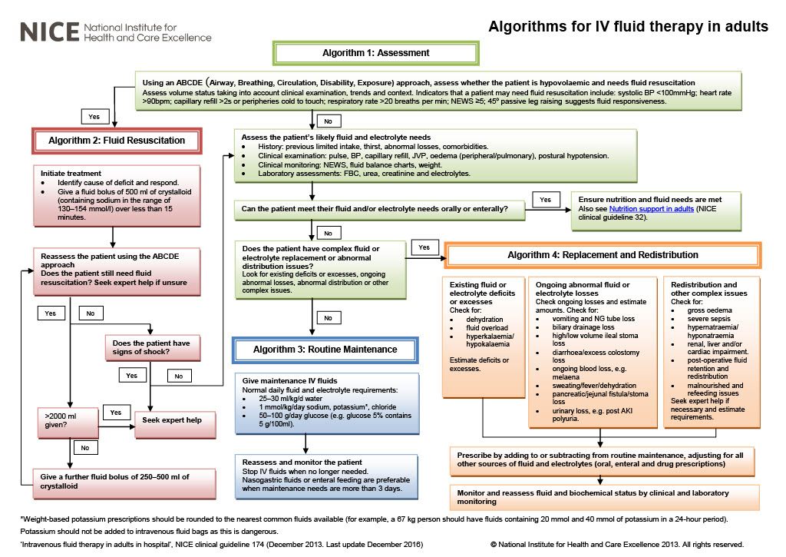

Charting fluids
Approach to fluids
When charting fluids, approach with the following:
- Resuscitation
- Routine maintenance
- Replacement
- Redistribution
- Reassessment

Resuscitation fluids
Resuscitation fluids are used if patient's appear clinically hypovolemic. Resuscitation fluids are always normal saline (0.9% NaCl).
Bolus fluids are typically administered depending on medical history and risk factors. A good approach is as follows:
- If patients have cardiac failure, kidney or liver failure, or at risk of fluid overloading, bolus with ~150mL at a time
- If patients are older or with poorer kidney function, bolus with ~250mL at a time
- If patients are otherwise well individuals, bolus with ~500mL at a time
After bolusing a patient, you should reassess within 15 minutes. If there are ongoing issues, you can rebolus with 250-500mL.
Routing maintenance fluids of an adult
Adult - Eating and Drinking
- If they can fulfil their requirements, don't give them IV fluids
- If they need some support with fluid intake only, you can give them slow fluids
- i.e. 60mL/hr 0.9% NaCl or Hartmann's
Adult - Nil by Mouth/ineffective inputs
This includes individuals who are pre-operative, on stroke call, with ?skull fracture, etc.
Patients who are NBM should have NG feeding. If they are temporarily NBM or have issues with fluid/food intake, they require: 1. 2-3x 1L bags of fluid 2. Sodium and chloride intake can be fulfilled with 2 bags of 0.9% NaCl or Hartmann's solution 3. Potassium intake can be fulfilled by adding 30mL into any two bags of fluids 4. Glucose intake can be fulfilled by using 1 bag of 5% dextrose
Questions
Theory beheind routine maintenance fluids
- Adults require 25-30mL/kg of fluids
- For an 80kg person, this is approx 2.4L - 2-3x 1L bags will do
- Approximately 1-2mM/kg/day of K, 2-3mM/kg/day Na and Cl- (i.e. )
- For an 80kg person, this is approx 80-160mM of K+ - replacing 60mM K+ will do
- For an 80kg person, this is approx 160-240mM of Na+ and Cl- - replacing up to 300mM Na+ won't hurt
- Approximately 50-100g/day glucose
- This is approx 1x 5% Dextrose bag per day
TKVO
TKVO stands for to keep vein open. These are fluids (typically 0.9% NaCl) which is given at ~20mL/hr. This keeps the vein open so the cannula doesn't tissue.
Fluid options in the hospital